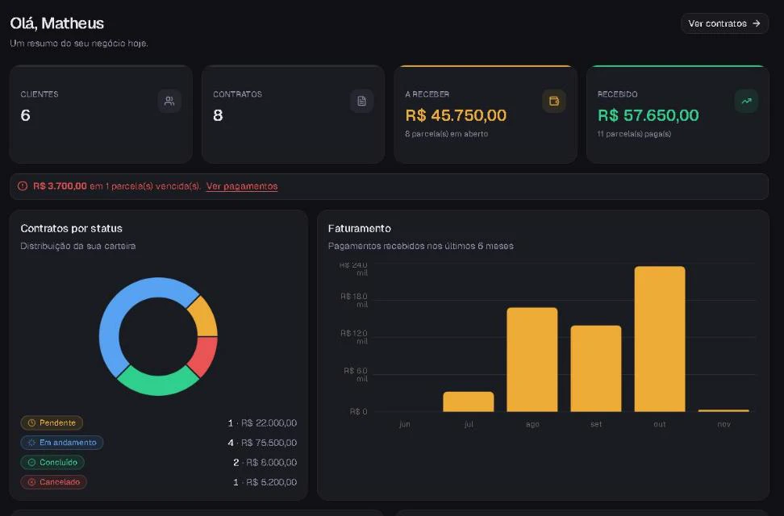
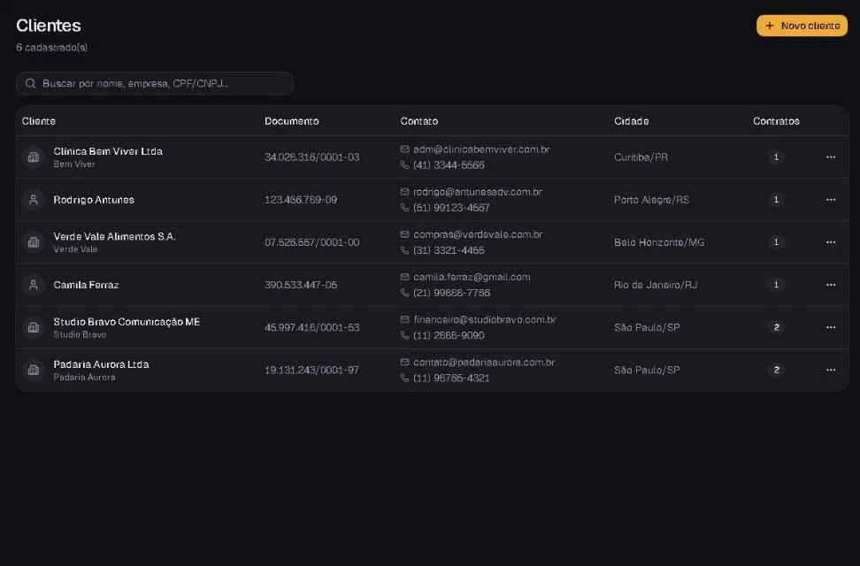
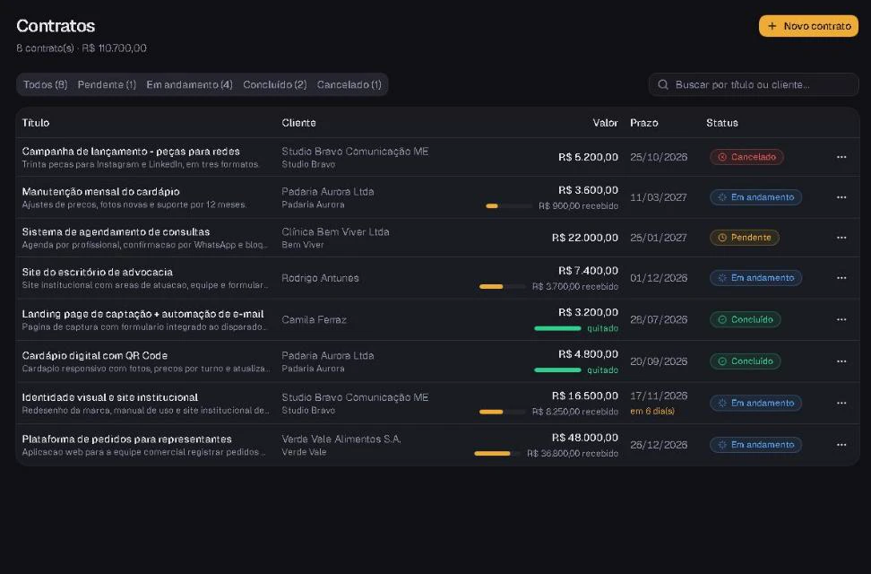
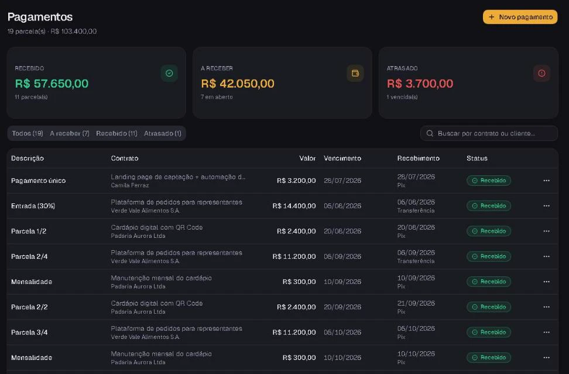

Estudo de caso
FreelaManager: clientes, contratos e parcelas para freelancers
Projeto próprio, feito sozinho entre agosto e outubro de 2026. API em Express com Prisma e PostgreSQL, front em React, e uma CI que sobe o banco do zero a cada commit.
- Testes
- 140
- 95 de integração no backend e 45 no front
- Commits
- 23
- de 17/08 a 22/10/2026
- Último commit
- a data vem da API do GitHub




O que o sistema faz
Cada usuário só enxerga os próprios dados. A demo tem uma conta pronta, recriada a cada 24 horas.
- Clientes PF e PJ com validação de CPF e CNPJ e endereço pelo CEP (ViaCEP)
- Contratos com status, valor e prazo
- Parcelamento automático em até 60 vezes, com baixa em um clique
- Parcela recebida, a receber ou atrasada, calculada pela data
- Painel com gráficos e alerta de vencimento
- Relatório por período com exportação em CSV
Como as partes se ligam
Em produção é um app Express só: a API responde em /api e o próprio Express entrega o build do React.
- React 19Vite, React Router, Tailwind e shadcn/ui
- Express 5JWT com bcrypt, validação com Zod
- Prisma 7migrations versionadas no repositório
- PostgreSQL 17no Neon; a Hostinger roda o Node
Decisões para não perder centavo
Sistema de cobrança não pode errar valor nem data. Estas regras vieram disso.
Dinheiro como Decimal
No banco é Decimal e no JSON viaja como texto. Número de ponto flutuante soma 0,1 + 0,2 e não dá 0,3.
Parcelas em centavos inteiros
R$ 100 em 3 vezes vira 33,34 + 33,33 + 33,33. A sobra vai para a primeira parcela e a soma fecha.
Vencimento no fim do mês
Uma parcela de 31/01 vence em 28/02 e volta para 31/03. Sem cuidado, 31/01 mais um mês vira 03/03.
Status calculado, nunca salvo
Pago, pendente ou atrasado sai de paid_at e do vencimento. Não existe status velho no banco.
Dados de outro usuário dão 404
Toda consulta filtra por userId. Pedir o registro de outra conta responde como se ele não existisse.
CSV que abre no Excel
Separado por ponto e vírgula e com BOM, para acentos e colunas saírem certos no Excel em português.
// Divide em centavos pra nao sumir centavo; a sobra vai pra 1a parcela
export function splitAmount(total, parts) {
const cents = Math.round(total * 100);
const base = Math.floor(cents / parts);
const rest = cents - base * parts;
return Array.from({ length: parts }, (_, i) => (base + (i === 0 ? rest : 0)) / 100);
}Um bug que a CI não pegava
A ficha do cliente mostrava como atrasada uma parcela que vencia no próprio dia, enquanto o resto do sistema mostrava a mesma parcela como “a receber”.
A causa era o fuso horário. As datas ficam no banco como meia-noite UTC, mas essa tela calculava “hoje” com a meia-noite local. Em Goiânia, que fica em UTC-3, o corte andava três horas.
Os testes passavam porque a CI roda em UTC, onde os dois cálculos dão o mesmo resultado. A correção foi tirar a regra dessa tela e usar a mesma função do resto do backend, para “hoje” ser definido num lugar só.
Testes e CI
Vitest e Supertest no backend, contra um Postgres de verdade. Cada teste cria a própria conta e apaga no final.
- Isolamento entre usuários
- Validação de CPF e CNPJ
- Parcelamento sem perder centavo
- Vencimento no fim do mês
- Totais do relatório
- No GitHub Actions: sobe o Postgres, roda as migrations do zero, os testes e o build do front
O que ainda não tem
Os botões de entrar com Google e Facebook aparecem na tela de login, mas ainda são só visuais e estão marcados como “em breve”.